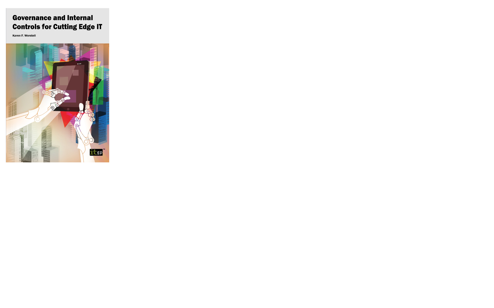

This is a ready-to-print page
Xanthos Digital Marketing agency
Xanthos Digital, established in 2002 and based in Ely, Cambridgeshire, is a digital marketing agency focused on helping small and medium-sized businesses grow through strategic and creative digital solutions.
Its services include digital strategy, SEO, PPC management, email marketing, web design, branding, and E-Commerce solutions. These services are tailored to strengthen clients’ online presence and support sustainable business growth across both B2B and B2C sectors.
Working across industries, the agency delivers a mix of E-Commerce, branding, web design, and marketing services. This environment required a balance between creativity and commercial thinking, ensuring that every output not only looked strong but also performed effectively in real-world business contexts.
The challenge
The challenge was to deliver high-quality creative work across a wide range of client needs, from E-Commerce platforms and marketing campaigns to branding systems and book cover design.
Each project came with different audiences, industries, and objectives, requiring fast adaptation and strong creative direction. The work needed to balance visual impact with usability, ensuring that designs were not only engaging but also clear, functional, and aligned with business goals.
At the same time, managing multiple projects and outputs required consistency, efficiency, and the ability to maintain a strong creative standard across everything produced.
In practice, this meant translating varied client objectives into clear and effective digital experiences, managing multiple types of design output, and maintaining consistency across platforms and channels. The work needed to support both strong presentation and practical usability, while helping clients communicate clearly and grow their businesses.
My role
During my time as a Senior Designer at Xanthos Digital, I led client meetings to understand business goals and project requirements, translating these into structured design briefs and actionable creative direction.
I operated at a creative lead / creative director level, combining hands-on design with team leadership and client strategy.
I led client conversations to uncover goals and translate them into clear creative direction, while managing a small team of designers across multiple projects.
My role spanned:
- Creative direction across digital and print
- UX and UI design for websites and E-Commerce
- Branding and visual identity development
- Book cover design and illustration for best-selling IT publications
- Web design and delivery using CMS platforms
I was responsible for shaping concepts, guiding execution, and ensuring the final output met both creative and commercial expectations.

Source images: STA-LOK Terminals Limited

Source images: Normans Musical Instruments
Process and approach
My approach combined creative thinking, structure, and collaboration.
Each project typically followed a flow:
- Understanding client goals and defining the brief
- Exploring concepts and visual directions
- Wireframing and prototyping (Axure)
- Designing and refining visual outputs
- Supporting development and delivery (WordPress, Kentico)
Alongside digital work, I created book covers that translated complex technical content into strong, engaging visuals, making abstract ideas more accessible and marketable.
My process combined strategic thinking, collaboration, and hands-on design delivery. It began with client meetings to define objectives, understand the audience, and shape the design brief. From there, I guided the team through concept development, wireframing, prototyping, visual design, and implementation.
The work spanned E-Commerce, responsive website design, branding, and digital print materials, using platforms such as Kentico and WordPress to create user-friendly experiences grounded in usability best practices. Alongside digital projects, I also designed book covers for best-selling IT publications, translating complex technological ideas into clear and compelling visual concepts.
Across all work, the approach focused on clarity, consistency, and effectiveness, ensuring that creative output supported both user needs and client objectives.
Across all projects, I focused on:
- Clarity and usability
- Strong visual storytelling
- Consistency across platforms
- Delivering work that performs, not just looks good

Selected examples of book cover design work created at Xanthos Digital Marketing for IT Governance.
My contribution
My contribution was in elevating the creative quality and strategic thinking across projects, while also ensuring delivery remained practical and efficient.
I led the creative direction and delivery across a diverse portfolio of client projects, shaping websites, E-Commerce experiences, branding systems, and book covers. By combining UX strategy with visual design and hands-on execution, I delivered cohesive, high-quality solutions across multiple formats that supported both user needs and business goals.
I brought together UX, branding, and visual design to create work that was both user-focused and commercially effective. By leading projects end-to-end — from concept to execution — I helped clients present their products, services, and ideas more clearly and with greater impact.
Beyond execution, I played a key role in:
- Guiding creative direction across multiple disciplines
- Supporting and managing a design team
- Translating business needs into strong visual solutions
- Delivering consistent, high-quality outputs across a diverse portfolio
I contributed not only through design execution, but also through client communication, team coordination, and design direction. By translating business requirements into effective creative solutions, I supported projects from early concept through to final implementation, helping clients communicate more clearly and present their brands more effectively.